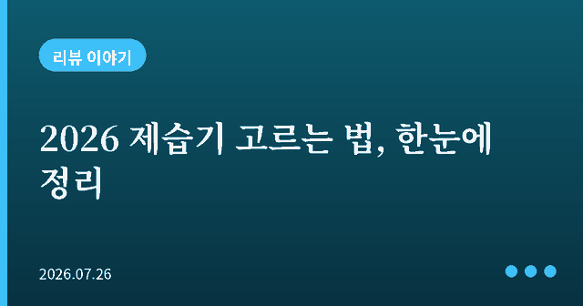
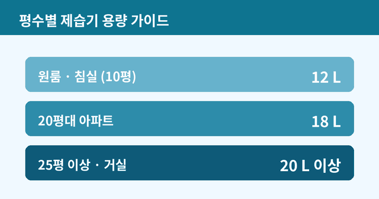

2026 제습기 고르는 법 — 평수별 용량부터 전기세까지 한눈에

장마와 무더위가 겹치는 여름, 빨래 냄새와 눅눅함을 잡아주는 제습기는 이제 계절 필수 가전이 됐습니다. 그런데 막상 사려고 보면 용량, 인버터, 전기세까지 따질 게 많아 머리가 복잡합니다. 오늘은 후회 없이 고르는 핵심 기준만 정리해 드리겠습니다.

1. 가장 중요한 건 용량
제습기 선택의 8할은 용량입니다. 집 평수에 맞춰 하루 제습량(L)을 고르면 됩니다. 10평 안팎(원룸·침실)은 12L, 20평대 아파트는 18L, 25평 이상은 20L 이상이 기준입니다. 용량이 작으면 하루 종일 돌려도 습기가 안 잡히고, 반대로 너무 크면 전기세만 낭비됩니다.
2. 인버터 여부 = 전기세와 소음
오래, 자주 켜둘 계획이라면 인버터 모델을 권합니다. 인버터는 설정 습도에 도달하면 모터를 완전히 껐다 켜는 대신 회전수를 줄여 유지합니다. 덕분에 전기세가 덜 나오고 소음도 작습니다. 침실에서 밤새 돌릴 거라면 1등급 + 인버터 + 저소음 조합을 우선으로 보세요.
3. 편의 기능 체크리스트
연속 배수 기능은 물통을 매번 비우기 귀찮을 때 호스를 연결해 배수구로 흘려보내는 기능으로, 장마철엔 필수에 가깝습니다. 집중 건조 킷은 신발장·옷장·빨래에 바람을 직접 쏘는 호스 액세서리로 실내 건조가 잦은 집에 유용합니다. 앱 연동은 외출 중 스마트폰으로 켜고 끄는 기능으로, 있으면 편하지만 필수는 아닙니다.
4. 브랜드 지형 간단 정리
국내 제습기 시장에서는 위닉스가 대중적인 강자로 꼽히고, LG는 듀얼 인버터를 앞세운 프리미엄 대용량 라인으로 평가받습니다. 가성비를 노린다면 12L급 1등급 저소음 모델들도 원룸·침실용으로 선택지가 넓습니다.
정리: 이렇게 고르세요
먼저 평수로 용량을 정하고, 오래 켤 거면 인버터·1등급을, 관리 편의를 위해 연속 배수를 확인하는 순서면 됩니다. 마지막으로 실제 구매 전에는 최신 가격과 사용자 리뷰를 꼭 비교해 보시길 권합니다. 같은 스펙이라도 시즌별 할인 폭이 크기 때문입니다.
← 목록으로